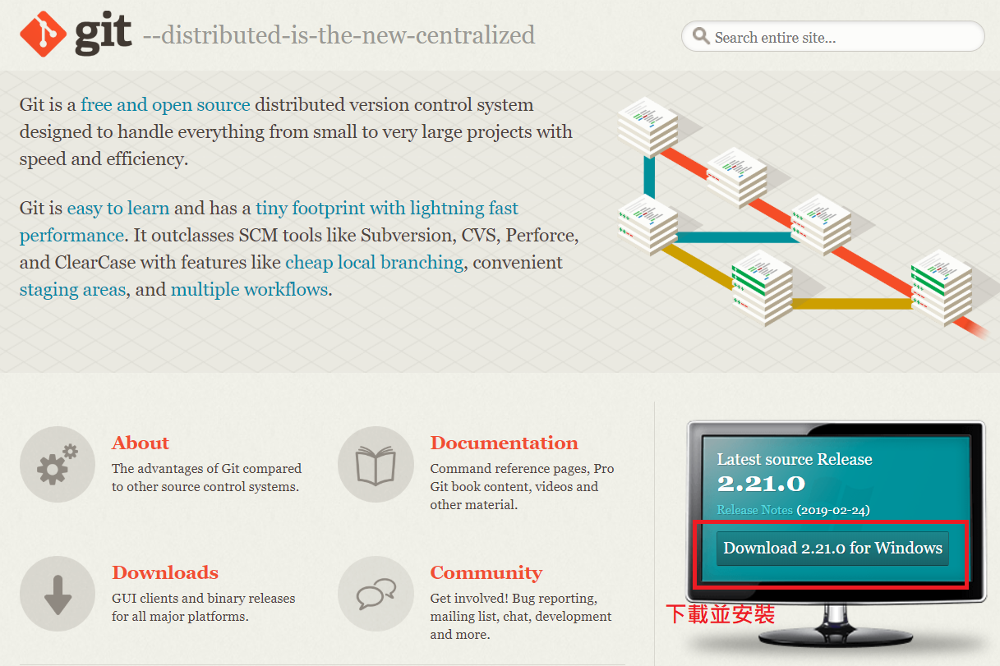
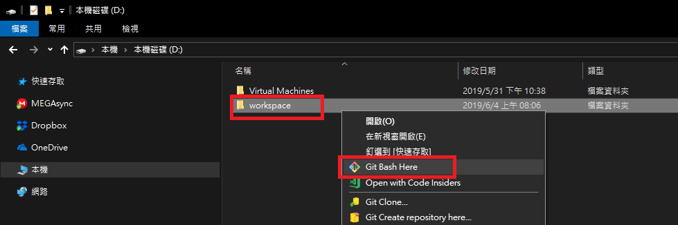
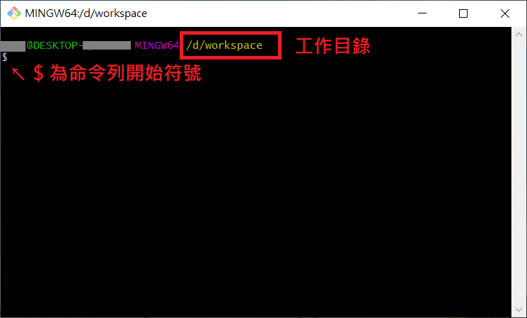

<!DOCTYPE html>
<html>
<head><meta name="generator" content="Hexo 3.8.0">
  <meta charset="utf-8">
  
  <title>Github Blog | Mars&#39;s Blog</title>
  <meta name="viewport" content="width=device-width, initial-scale=1, maximum-scale=1">
  <meta name="description" content="一、說明利用Hexo+Github建立前端型Blog 二、安裝1.依賴 Hexo nodejs   GitHub Pages(github.io)  2.安裝環境 下載並安裝 Git  安裝 Node.js  參考：Node.js 安裝配置    3.初始化工作目錄 在D碟建立工作目錄workspace 工作目錄上按右鍵，打開 Git Bash  4.安裝HexoGit bash中，透過 npm">
<meta name="keywords" content="web,blog,hexo,setting,github">
<meta property="og:type" content="article">
<meta property="og:title" content="Github Blog">
<meta property="og:url" content="https://blog.mars-world.net/2019/04/20/github-blog/index.html">
<meta property="og:site_name" content="Mars&#39;s Blog">
<meta property="og:description" content="一、說明利用Hexo+Github建立前端型Blog 二、安裝1.依賴 Hexo nodejs   GitHub Pages(github.io)  2.安裝環境 下載並安裝 Git  安裝 Node.js  參考：Node.js 安裝配置    3.初始化工作目錄 在D碟建立工作目錄workspace 工作目錄上按右鍵，打開 Git Bash  4.安裝HexoGit bash中，透過 npm">
<meta property="og:locale" content="default">
<meta property="og:image" content="https://blog.mars-world.net/2019/04/20/github-blog/git-download.png">
<meta property="og:image" content="https://blog.mars-world.net/2019/04/20/github-blog/create-workspace.png">
<meta property="og:image" content="https://blog.mars-world.net/2019/04/20/github-blog/git-bash.png">
<meta property="og:updated_time" content="2019-07-21T16:01:06.694Z">
<meta name="twitter:card" content="summary">
<meta name="twitter:title" content="Github Blog">
<meta name="twitter:description" content="一、說明利用Hexo+Github建立前端型Blog 二、安裝1.依賴 Hexo nodejs   GitHub Pages(github.io)  2.安裝環境 下載並安裝 Git  安裝 Node.js  參考：Node.js 安裝配置    3.初始化工作目錄 在D碟建立工作目錄workspace 工作目錄上按右鍵，打開 Git Bash  4.安裝HexoGit bash中，透過 npm">
<meta name="twitter:image" content="https://blog.mars-world.net/2019/04/20/github-blog/git-download.png">
  
  
  
    <link href="//fonts.googleapis.com/css?family=Source+Code+Pro" rel="stylesheet" type="text/css">
  

  <link rel="stylesheet" href="https://maxcdn.bootstrapcdn.com/bootstrap/3.3.6/css/bootstrap.min.css" integrity="sha384-1q8mTJOASx8j1Au+a5WDVnPi2lkFfwwEAa8hDDdjZlpLegxhjVME1fgjWPGmkzs7" crossorigin="anonymous">

  <link rel="stylesheet" href="https://maxcdn.bootstrapcdn.com/font-awesome/4.5.0/css/font-awesome.min.css" integrity="sha384-XdYbMnZ/QjLh6iI4ogqCTaIjrFk87ip+ekIjefZch0Y+PvJ8CDYtEs1ipDmPorQ+" crossorigin="anonymous">

  <link rel="stylesheet" href="/css/styles.css">
  

</head>
</html>
<body>
  <nav class="navbar navbar-inverse">
  <div class="container">
    <!-- Brand and toggle get grouped for better mobile display -->
    <div class="navbar-header">
      <button type="button" class="navbar-toggle collapsed" data-toggle="collapse" data-target="#main-menu-navbar" aria-expanded="false">
        <span class="sr-only">Toggle navigation</span>
        <span class="icon-bar"></span>
        <span class="icon-bar"></span>
        <span class="icon-bar"></span>
      </button>
      
    </div>

    <!-- Collect the nav links, forms, and other content for toggling -->
    <div class="collapse navbar-collapse" id="main-menu-navbar">
      <ul class="nav navbar-nav">
        
          <li><a class href="/index.html">Home</a></li>
        
          <li><a class href="/archives/">Archives</a></li>
        
          <li><a class href="https://github.com/marshung24">GitHub</a></li>
        
      </ul>

      <!--
      <ul class="nav navbar-nav navbar-right">
        
      </ul>
      -->
    </div><!-- /.navbar-collapse -->
  </div><!-- /.container-fluid -->
</nav>

  <div class="container">
    <div class="blog-header">
  <h1 class="blog-title">Mars&#39;s Blog</h1>
  
    <p class="lead blog-description">Mars&#39;s learning record</p>
  
</div>

    <div class="row">
        <div class="col-sm-8 blog-main">
          <article id="post-github-blog" class="article article-type-post" itemscope itemprop="blogPost">

  <header class="article-header">
    
  
    <h1 class="article-title" itemprop="name">
      Github Blog
    </h1>
  


  </header>

  <div class="article-meta">
    <div class="article-datetime">
  <a href="/2019/04/20/github-blog/" class="article-date"><time datetime="2019-04-20T01:57:00.000Z" itemprop="datePublished">2019-04-20</time></a>
</div>

    <div class="article-author">Mars Hung</div>
    
  <div class="article-category">
    <a class="article-category-link" href="/categories/web/">web</a>
  </div>


    <div class="article-reading">
  
  <span id="busuanzi_container_page_pv">文章閱讀量<span id="busuanzi_value_page_pv"></span>次</span>
  
</div>

  </div>
  <div class="article-inner">

    <div class="article-entry" itemprop="articleBody">
      
        
<div id="toc">
    <ol class="toc"><li class="toc-item toc-level-1"><a class="toc-link" href="#一、說明"><span class="toc-text">一、說明</span></a></li><li class="toc-item toc-level-1"><a class="toc-link" href="#二、安裝"><span class="toc-text">二、安裝</span></a><ol class="toc-child"><li class="toc-item toc-level-3"><a class="toc-link" href="#1-依賴"><span class="toc-text">1.依賴</span></a></li><li class="toc-item toc-level-3"><a class="toc-link" href="#2-安裝環境"><span class="toc-text">2.安裝環境</span></a></li><li class="toc-item toc-level-3"><a class="toc-link" href="#3-初始化工作目錄"><span class="toc-text">3.初始化工作目錄</span></a></li><li class="toc-item toc-level-3"><a class="toc-link" href="#4-安裝Hexo"><span class="toc-text">4.安裝Hexo</span></a></li><li class="toc-item toc-level-3"><a class="toc-link" href="#5-初始化Hexo"><span class="toc-text">5.初始化Hexo</span></a></li><li class="toc-item toc-level-3"><a class="toc-link" href="#6-設定Hexo"><span class="toc-text">6.設定Hexo</span></a></li><li class="toc-item toc-level-3"><a class="toc-link" href="#7-安裝測試伺服器"><span class="toc-text">7.安裝測試伺服器</span></a></li><li class="toc-item toc-level-3"><a class="toc-link" href="#8-下載主題"><span class="toc-text">8.下載主題</span></a></li><li class="toc-item toc-level-3"><a class="toc-link" href="#9-修改主題設定"><span class="toc-text">9.修改主題設定</span></a></li></ol></li></ol><li class="toc-item toc-level-1"><a class="toc-link" href="#三、指令"><span class="toc-text">三、指令</span></a><ol class="toc-child"><li class="toc-item toc-level-3"><a class="toc-link" href="#1-建立新文件"><span class="toc-text">1.建立新文件</span></a></li><li class="toc-item toc-level-3"><a class="toc-link" href="#2-產生靜態檔案"><span class="toc-text">2.產生靜態檔案</span></a></li><li class="toc-item toc-level-3"><a class="toc-link" href="#3-清除快取"><span class="toc-text">3.清除快取</span></a></li><li class="toc-item toc-level-3"><a class="toc-link" href="#4-啟動伺服器"><span class="toc-text">4.啟動伺服器</span></a></li><li class="toc-item toc-level-3"><a class="toc-link" href="#5-查看結果"><span class="toc-text">5.查看結果</span></a></li><li class="toc-item toc-level-3"><a class="toc-link" href="#6-部署網站"><span class="toc-text">6.部署網站</span></a></li></ol></li><li class="toc-item toc-level-1"><a class="toc-link" href="#四、其他應用"><span class="toc-text">四、其他應用</span></a><ol class="toc-child"><li class="toc-item toc-level-2"><a class="toc-link" href="#添加文章目錄"><span class="toc-text">添加文章目錄</span></a><ol class="toc-child"><li class="toc-item toc-level-3"><a class="toc-link" href="#添加toc-ejs文件"><span class="toc-text">添加toc.ejs文件</span></a></li><li class="toc-item toc-level-3"><a class="toc-link" href="#添加到頁面中"><span class="toc-text">添加到頁面中</span></a></li><li class="toc-item toc-level-3"><a class="toc-link" href="#隱藏ol-li前方數字"><span class="toc-text">隱藏ol li前方數字</span></a></li></ol></li></ol></li><li class="toc-item toc-level-1"><a class="toc-link" href="#五、參考資料"><span class="toc-text">五、參考資料</span></a></li>
</div>

        <h1 id="一、說明"><a href="#一、說明" class="headerlink" title="一、說明"></a>一、說明</h1><p>利用Hexo+Github建立前端型Blog</p>
<h1 id="二、安裝"><a href="#二、安裝" class="headerlink" title="二、安裝"></a>二、安裝</h1><h3 id="1-依賴"><a href="#1-依賴" class="headerlink" title="1.依賴"></a>1.依賴</h3><ul>
<li>Hexo<ul>
<li>nodejs</li>
</ul>
</li>
<li>GitHub Pages(github.io)</li>
</ul>
<h3 id="2-安裝環境"><a href="#2-安裝環境" class="headerlink" title="2.安裝環境"></a>2.安裝環境</h3><ul>
<li><p>下載並安裝 <a href="https://git-scm.com/" target="_blank" rel="noopener">Git</a><br></p>
</li>
<li><p>安裝 <a href="https://nodejs.org/en/" target="_blank" rel="noopener">Node.js</a></p>
<blockquote>
<p>參考：<a href="http://www.runoob.com/nodejs/nodejs-install-setup.html" target="_blank" rel="noopener">Node.js 安裝配置</a></p>
</blockquote>
</li>
</ul>
<h3 id="3-初始化工作目錄"><a href="#3-初始化工作目錄" class="headerlink" title="3.初始化工作目錄"></a>3.初始化工作目錄</h3><ul>
<li>在D碟建立工作目錄workspace</li>
<li>工作目錄上按右鍵，打開 Git Bash<br><br></li>
</ul>
<h3 id="4-安裝Hexo"><a href="#4-安裝Hexo" class="headerlink" title="4.安裝Hexo"></a>4.安裝Hexo</h3><p>Git bash中，透過 npm 即可完成 Hexo 的安裝。<br><figure class="highlight plain"><table><tr><td class="gutter"><pre><span class="line">1</span><br></pre></td><td class="code"><pre><span class="line">$ npm install -g hexo-cli</span><br></pre></td></tr></table></figure></p>
<h3 id="5-初始化Hexo"><a href="#5-初始化Hexo" class="headerlink" title="5.初始化Hexo"></a>5.初始化Hexo</h3><p>一旦 Hexo 完成後，請執行下列指令，Hexo 會在指定資料夾中建立所有您需要的檔案。<br><figure class="highlight plain"><table><tr><td class="gutter"><pre><span class="line">1</span><br><span class="line">2</span><br><span class="line">3</span><br></pre></td><td class="code"><pre><span class="line">$ hexo init blog-src</span><br><span class="line">$ cd blog-src</span><br><span class="line">$ npm install</span><br></pre></td></tr></table></figure></p>
<h3 id="6-設定Hexo"><a href="#6-設定Hexo" class="headerlink" title="6.設定Hexo"></a>6.設定Hexo</h3><p>網站 <a href="https://hexo.io/zh-tw/docs/configuration" target="_blank" rel="noopener">配置</a> 檔案，您可以在此配置大部分的設定。<br><figure class="highlight plain"><table><tr><td class="gutter"><pre><span class="line">1</span><br><span class="line">2</span><br><span class="line">3</span><br><span class="line">4</span><br><span class="line">5</span><br><span class="line">6</span><br><span class="line">7</span><br><span class="line">8</span><br><span class="line">9</span><br><span class="line">10</span><br><span class="line">11</span><br></pre></td><td class="code"><pre><span class="line">title: Mars&apos;s Blog</span><br><span class="line">subtitle: Mars&apos;s learning record</span><br><span class="line">description: Record Mars&apos;s learning experiences and experiences</span><br><span class="line">author: Mars Hung</span><br><span class="line">url: https://marshung24.github.io</span><br><span class="line">new_post_name: :year-:month-:day-:title.md # File name of new posts</span><br><span class="line">post_asset_folder: true</span><br><span class="line">theme: bootstrap-blog</span><br><span class="line">deploy:</span><br><span class="line">  type: git</span><br><span class="line">  repo: git@github.com:marshung24/marshung24.github.io.git</span><br></pre></td></tr></table></figure></p>
<blockquote>
<p>deploy git 需設定global git上傳ssh key資料</p>
</blockquote>
<h3 id="7-安裝測試伺服器"><a href="#7-安裝測試伺服器" class="headerlink" title="7.安裝測試伺服器"></a>7.安裝測試伺服器</h3><figure class="highlight plain"><table><tr><td class="gutter"><pre><span class="line">1</span><br></pre></td><td class="code"><pre><span class="line">$ npm install hexo-server --save</span><br></pre></td></tr></table></figure>
<h3 id="8-下載主題"><a href="#8-下載主題" class="headerlink" title="8.下載主題"></a>8.下載主題</h3><figure class="highlight plain"><table><tr><td class="gutter"><pre><span class="line">1</span><br></pre></td><td class="code"><pre><span class="line">$ git clone https://github.com/cgmartin/hexo-theme-bootstrap-blog.git themes/bootstrap-blog</span><br></pre></td></tr></table></figure>
<h3 id="9-修改主題設定"><a href="#9-修改主題設定" class="headerlink" title="9.修改主題設定"></a>9.修改主題設定</h3><figure class="highlight plain"><table><tr><td class="gutter"><pre><span class="line">1</span><br><span class="line">2</span><br><span class="line">3</span><br><span class="line">4</span><br><span class="line">5</span><br><span class="line">6</span><br><span class="line">7</span><br><span class="line">8</span><br><span class="line">9</span><br><span class="line">10</span><br><span class="line">11</span><br><span class="line">12</span><br><span class="line">13</span><br><span class="line">14</span><br><span class="line">15</span><br><span class="line">16</span><br><span class="line">17</span><br><span class="line">18</span><br><span class="line">19</span><br><span class="line">20</span><br><span class="line">21</span><br><span class="line">22</span><br><span class="line">23</span><br><span class="line">24</span><br><span class="line">25</span><br><span class="line">26</span><br></pre></td><td class="code"><pre><span class="line"># File: themes/bootstrap-blog/_config.yml</span><br><span class="line"></span><br><span class="line"># Header</span><br><span class="line">navbar_brand: false</span><br><span class="line">menu:</span><br><span class="line">  Home: index.html</span><br><span class="line">  Archives: archives/</span><br><span class="line">  GitHub: https://github.com/marshung24</span><br><span class="line"></span><br><span class="line"># Content</span><br><span class="line">excerpt_link: Read More</span><br><span class="line">fancybox: false</span><br><span class="line"></span><br><span class="line"># Sidebar</span><br><span class="line">widgets:</span><br><span class="line">- recent_posts</span><br><span class="line">- archive</span><br><span class="line">- category</span><br><span class="line">- tag</span><br><span class="line"></span><br><span class="line"># widget behavior</span><br><span class="line">archive_type: &apos;monthly&apos;</span><br><span class="line">show_count: true</span><br><span class="line"></span><br><span class="line"># visitors count</span><br><span class="line">counter: true</span><br></pre></td></tr></table></figure>
<p>訪問計數<br><figure class="highlight plain"><table><tr><td class="gutter"><pre><span class="line">1</span><br><span class="line">2</span><br><span class="line">3</span><br><span class="line">4</span><br><span class="line">5</span><br><span class="line">6</span><br><span class="line">7</span><br><span class="line">8</span><br></pre></td><td class="code"><pre><span class="line"># File: themes/bootstrap-blog/layout/_partial/footer.ejs</span><br><span class="line"></span><br><span class="line">&lt;% if (theme.counter) &#123; %&gt;</span><br><span class="line">  &lt;script async src=&quot;//busuanzi.ibruce.info/busuanzi/2.3/busuanzi.pure.mini.js&quot;&gt;&lt;/script&gt;</span><br><span class="line">  &lt;span id=&quot;busuanzi_container_site_pv&quot;&gt;總訪問量&lt;span id=&quot;busuanzi_value_site_pv&quot;&gt;&lt;/span&gt;次&lt;/span&gt;</span><br><span class="line">  &lt;span class=&quot;post-meta-divider&quot;&gt;|&lt;/span&gt;</span><br><span class="line">  &lt;span id=&quot;busuanzi_container_site_uv&quot;&gt;訪客數&lt;span id=&quot;busuanzi_value_site_uv&quot;&gt;&lt;/span&gt;人&lt;/span&gt;</span><br><span class="line">&lt;% &#125; %&gt;</span><br></pre></td></tr></table></figure></p>
<h1 id="三、指令"><a href="#三、指令" class="headerlink" title="三、指令"></a>三、指令</h1><h3 id="1-建立新文件"><a href="#1-建立新文件" class="headerlink" title="1.建立新文件"></a>1.建立新文件</h3><figure class="highlight plain"><table><tr><td class="gutter"><pre><span class="line">1</span><br></pre></td><td class="code"><pre><span class="line">$ hexo new [layout] &lt;title&gt;</span><br></pre></td></tr></table></figure>
<h3 id="2-產生靜態檔案"><a href="#2-產生靜態檔案" class="headerlink" title="2.產生靜態檔案"></a>2.產生靜態檔案</h3><figure class="highlight plain"><table><tr><td class="gutter"><pre><span class="line">1</span><br></pre></td><td class="code"><pre><span class="line">hexo generate</span><br></pre></td></tr></table></figure>
<h3 id="3-清除快取"><a href="#3-清除快取" class="headerlink" title="3.清除快取"></a>3.清除快取</h3><p>清除快取檔案 (db.json) 和已產生的靜態檔案 (public)。<br><figure class="highlight plain"><table><tr><td class="gutter"><pre><span class="line">1</span><br></pre></td><td class="code"><pre><span class="line">$ hexo clean</span><br></pre></td></tr></table></figure></p>
<h3 id="4-啟動伺服器"><a href="#4-啟動伺服器" class="headerlink" title="4.啟動伺服器"></a>4.啟動伺服器</h3><figure class="highlight plain"><table><tr><td class="gutter"><pre><span class="line">1</span><br></pre></td><td class="code"><pre><span class="line">hexo server -p 80</span><br></pre></td></tr></table></figure>
<h3 id="5-查看結果"><a href="#5-查看結果" class="headerlink" title="5.查看結果"></a>5.查看結果</h3><p>前往 <a href="http://localhost" target="_blank" rel="noopener">http://localhost</a> 查看建構後的結果</p>
<h3 id="6-部署網站"><a href="#6-部署網站" class="headerlink" title="6.部署網站"></a>6.部署網站</h3><p>上傳至Github<br><figure class="highlight plain"><table><tr><td class="gutter"><pre><span class="line">1</span><br></pre></td><td class="code"><pre><span class="line">$ hexo deploy -g</span><br></pre></td></tr></table></figure></p>
<h1 id="四、其他應用"><a href="#四、其他應用" class="headerlink" title="四、其他應用"></a>四、其他應用</h1><h2 id="添加文章目錄"><a href="#添加文章目錄" class="headerlink" title="添加文章目錄"></a>添加文章目錄</h2><h3 id="添加toc-ejs文件"><a href="#添加toc-ejs文件" class="headerlink" title="添加toc.ejs文件"></a>添加toc.ejs文件</h3><ul>
<li>在主題目錄下layout/_partial文件夾中新建toc.ejs文件，存放文章目錄的代碼。<figure class="highlight plain"><table><tr><td class="gutter"><pre><span class="line">1</span><br><span class="line">2</span><br><span class="line">3</span><br><span class="line">4</span><br><span class="line">5</span><br></pre></td><td class="code"><pre><span class="line">&lt;% if (post.toc != false) &#123; %&gt;</span><br><span class="line">&lt;div id=&quot;toc&quot;&gt;</span><br><span class="line">  &lt;%- toc(post.content, &#123;list_number: false&#125;) %&gt;</span><br><span class="line">&lt;/div&gt;</span><br><span class="line">&lt;% &#125; %&gt;</span><br></pre></td></tr></table></figure>
</li>
</ul>
<blockquote>
<p>這裡的toc()函數就是Hexo官方提供的輔助函數</p>
</blockquote>
<h3 id="添加到頁面中"><a href="#添加到頁面中" class="headerlink" title="添加到頁面中"></a>添加到頁面中</h3><p>主題目錄文章佈局文件layout/_partial/article.ejs，尋找代碼：<br><figure class="highlight plain"><table><tr><td class="gutter"><pre><span class="line">1</span><br></pre></td><td class="code"><pre><span class="line">&lt;%- post.content %&gt;</span><br></pre></td></tr></table></figure></p>
<p>在前面添加了一行 &lt;%- partial(‘toc’) %&gt; 引用了目錄代碼，變成：<br><figure class="highlight plain"><table><tr><td class="gutter"><pre><span class="line">1</span><br><span class="line">2</span><br></pre></td><td class="code"><pre><span class="line">&lt;%- partial(&apos;toc&apos;) %&gt;</span><br><span class="line">&lt;%- post.content %&gt;</span><br></pre></td></tr></table></figure></p>
<h3 id="隱藏ol-li前方數字"><a href="#隱藏ol-li前方數字" class="headerlink" title="隱藏ol li前方數字"></a>隱藏ol li前方數字</h3><p>在source/css/custom.css增加樣式：<br><figure class="highlight plain"><table><tr><td class="gutter"><pre><span class="line">1</span><br><span class="line">2</span><br><span class="line">3</span><br></pre></td><td class="code"><pre><span class="line">#toc ol li&#123; </span><br><span class="line">  list-style-type:none; </span><br><span class="line">&#125;</span><br></pre></td></tr></table></figure></p>
<blockquote>
<p>錄自 <a href="https://pengloo53.gitbooks.io/hexo/content/chapter2/7%20%E6%B7%BB%E5%8A%A0%E6%96%87%E7%AB%A0%E7%9B%AE%E5%BD%95.html?q=" target="_blank" rel="noopener">「HEXO小書-添加文章目錄」</a></p>
</blockquote>
<h1 id="五、參考資料"><a href="#五、參考資料" class="headerlink" title="五、參考資料"></a>五、參考資料</h1><ul>
<li><a href="https://hexo.io/zh-tw/docs/" target="_blank" rel="noopener">Hexo</a></li>
<li><a href="https://hexo.io/themes/" target="_blank" rel="noopener">Hexo Themes</a></li>
<li><a href="https://markdown.tw/" target="_blank" rel="noopener">Markdown 語法說明</a></li>
<li><a href="https://pengloo53.gitbooks.io/hexo/content/" target="_blank" rel="noopener">HEXO小書</a></li>
</ul>

      
    </div>

    
      

    

    <footer class="article-footer">
      <a data-url="https://blog.mars-world.net/2019/04/20/github-blog/" data-id="ck2yudvmn0004awufyz3l633a" class="article-share-link">
        <i class="fa fa-share"></i> Share
      </a>
      
      
  <ul class="article-tag-list"><li class="article-tag-list-item"><a class="article-tag-list-link" href="/tags/blog/">blog</a></li><li class="article-tag-list-item"><a class="article-tag-list-link" href="/tags/github/">github</a></li><li class="article-tag-list-item"><a class="article-tag-list-link" href="/tags/hexo/">hexo</a></li><li class="article-tag-list-item"><a class="article-tag-list-link" href="/tags/setting/">setting</a></li><li class="article-tag-list-item"><a class="article-tag-list-link" href="/tags/web/">web</a></li></ul>


    </footer>
  </div>
  
    
<ul id="article-nav" class="nav nav-pills nav-justified">
  
  <li role="presentation">
    <a href="/2019/04/15/test-specification/" id="article-nav-older" class="article-nav-link-wrap">
      <i class="fa fa-chevron-left pull-left"></i>
      <span class="article-nav-link-title">開發及測試要點</span>
    </a>
  </li>
  
  
  <li role="presentation">
    <a href="/2019/05/03/coding-style-standard/" id="article-nav-newer" class="article-nav-link-wrap">
      <span class="article-nav-link-title">程式碼寫作風格標準-CodeStyle</span>
      <i class="fa fa-chevron-right pull-right"></i>
    </a>
  </li>
  
</ul>


  
</article>


        </div>
        <div class="col-sm-3 col-sm-offset-1 blog-sidebar">
          
  
  <div class="sidebar-module">
    <h4>Recents</h4>
    <ul class="sidebar-module-list">
      
        <li>
          <a href="/2019/11/14/web-server-xampp-install/">Web伺服器安裝(XAMPP)-Windows</a>
        </li>
      
        <li>
          <a href="/2019/08/18/crud-design-04/">CRUD表單設計 Day-04 Javascript</a>
        </li>
      
        <li>
          <a href="/2019/08/17/crud-design-03/">CRUD表單設計 Day-03 安裝Bootstrap4</a>
        </li>
      
        <li>
          <a href="/2019/08/16/php-training/">PHP培訓-CRUD</a>
        </li>
      
        <li>
          <a href="/2019/08/16/crud-design-02/">CRUD表單設計 Day-02 安裝PHP Framework</a>
        </li>
      
    </ul>
  </div>


  
  <div class="sidebar-module">
    <h4>Archives</h4>
    <ul class="sidebar-module-list"><li class="sidebar-module-list-item"><a class="sidebar-module-list-link" href="/archives/2019/11/">November 2019</a><span class="sidebar-module-list-count">1</span></li><li class="sidebar-module-list-item"><a class="sidebar-module-list-link" href="/archives/2019/08/">August 2019</a><span class="sidebar-module-list-count">4</span></li><li class="sidebar-module-list-item"><a class="sidebar-module-list-link" href="/archives/2019/07/">July 2019</a><span class="sidebar-module-list-count">6</span></li><li class="sidebar-module-list-item"><a class="sidebar-module-list-link" href="/archives/2019/06/">June 2019</a><span class="sidebar-module-list-count">1</span></li><li class="sidebar-module-list-item"><a class="sidebar-module-list-link" href="/archives/2019/05/">May 2019</a><span class="sidebar-module-list-count">4</span></li><li class="sidebar-module-list-item"><a class="sidebar-module-list-link" href="/archives/2019/04/">April 2019</a><span class="sidebar-module-list-count">2</span></li><li class="sidebar-module-list-item"><a class="sidebar-module-list-link" href="/archives/2017/09/">September 2017</a><span class="sidebar-module-list-count">2</span></li></ul>
  </div>


  
  <div class="sidebar-module">
    <h4>Categories</h4>
    <ul class="sidebar-module-list"><li class="sidebar-module-list-item"><a class="sidebar-module-list-link" href="/categories/doc/">doc</a><span class="sidebar-module-list-count">2</span></li><li class="sidebar-module-list-item"><a class="sidebar-module-list-link" href="/categories/info/">info</a><span class="sidebar-module-list-count">3</span></li><li class="sidebar-module-list-item"><a class="sidebar-module-list-link" href="/categories/security/">security</a><span class="sidebar-module-list-count">1</span></li><li class="sidebar-module-list-item"><a class="sidebar-module-list-link" href="/categories/server/">server</a><span class="sidebar-module-list-count">2</span></li><li class="sidebar-module-list-item"><a class="sidebar-module-list-link" href="/categories/test/">test</a><span class="sidebar-module-list-count">1</span></li><li class="sidebar-module-list-item"><a class="sidebar-module-list-link" href="/categories/tools/">tools</a><span class="sidebar-module-list-count">5</span></li><li class="sidebar-module-list-item"><a class="sidebar-module-list-link" href="/categories/training/">training</a><span class="sidebar-module-list-count">5</span></li><li class="sidebar-module-list-item"><a class="sidebar-module-list-link" href="/categories/web/">web</a><span class="sidebar-module-list-count">1</span></li></ul>
  </div>


  
  <div class="sidebar-module">
    <h4>Tags</h4>
    <ul class="sidebar-module-list"><li class="sidebar-module-list-item"><a class="sidebar-module-list-link" href="/tags/account/">account</a><span class="sidebar-module-list-count">1</span></li><li class="sidebar-module-list-item"><a class="sidebar-module-list-link" href="/tags/ajax/">ajax</a><span class="sidebar-module-list-count">1</span></li><li class="sidebar-module-list-item"><a class="sidebar-module-list-link" href="/tags/apache/">apache</a><span class="sidebar-module-list-count">1</span></li><li class="sidebar-module-list-item"><a class="sidebar-module-list-link" href="/tags/blog/">blog</a><span class="sidebar-module-list-count">1</span></li><li class="sidebar-module-list-item"><a class="sidebar-module-list-link" href="/tags/bootstrap/">bootstrap</a><span class="sidebar-module-list-count">1</span></li><li class="sidebar-module-list-item"><a class="sidebar-module-list-link" href="/tags/codeingiter/">codeingiter</a><span class="sidebar-module-list-count">1</span></li><li class="sidebar-module-list-item"><a class="sidebar-module-list-link" href="/tags/coding/">coding</a><span class="sidebar-module-list-count">5</span></li><li class="sidebar-module-list-item"><a class="sidebar-module-list-link" href="/tags/composer/">composer</a><span class="sidebar-module-list-count">1</span></li><li class="sidebar-module-list-item"><a class="sidebar-module-list-link" href="/tags/debug/">debug</a><span class="sidebar-module-list-count">1</span></li><li class="sidebar-module-list-item"><a class="sidebar-module-list-link" href="/tags/dev/">dev</a><span class="sidebar-module-list-count">17</span></li><li class="sidebar-module-list-item"><a class="sidebar-module-list-link" href="/tags/doc/">doc</a><span class="sidebar-module-list-count">3</span></li><li class="sidebar-module-list-item"><a class="sidebar-module-list-link" href="/tags/env/">env</a><span class="sidebar-module-list-count">1</span></li><li class="sidebar-module-list-item"><a class="sidebar-module-list-link" href="/tags/git/">git</a><span class="sidebar-module-list-count">2</span></li><li class="sidebar-module-list-item"><a class="sidebar-module-list-link" href="/tags/github/">github</a><span class="sidebar-module-list-count">1</span></li><li class="sidebar-module-list-item"><a class="sidebar-module-list-link" href="/tags/hexo/">hexo</a><span class="sidebar-module-list-count">1</span></li><li class="sidebar-module-list-item"><a class="sidebar-module-list-link" href="/tags/ide/">ide</a><span class="sidebar-module-list-count">1</span></li><li class="sidebar-module-list-item"><a class="sidebar-module-list-link" href="/tags/info/">info</a><span class="sidebar-module-list-count">3</span></li><li class="sidebar-module-list-item"><a class="sidebar-module-list-link" href="/tags/javascript/">javascript</a><span class="sidebar-module-list-count">2</span></li><li class="sidebar-module-list-item"><a class="sidebar-module-list-link" href="/tags/jquery/">jquery</a><span class="sidebar-module-list-count">1</span></li><li class="sidebar-module-list-item"><a class="sidebar-module-list-link" href="/tags/linux/">linux</a><span class="sidebar-module-list-count">2</span></li><li class="sidebar-module-list-item"><a class="sidebar-module-list-link" href="/tags/mysql/">mysql</a><span class="sidebar-module-list-count">2</span></li><li class="sidebar-module-list-item"><a class="sidebar-module-list-link" href="/tags/nginx/">nginx</a><span class="sidebar-module-list-count">2</span></li><li class="sidebar-module-list-item"><a class="sidebar-module-list-link" href="/tags/nodejs/">nodejs</a><span class="sidebar-module-list-count">1</span></li><li class="sidebar-module-list-item"><a class="sidebar-module-list-link" href="/tags/php/">php</a><span class="sidebar-module-list-count">9</span></li><li class="sidebar-module-list-item"><a class="sidebar-module-list-link" href="/tags/phpunit/">phpunit</a><span class="sidebar-module-list-count">1</span></li><li class="sidebar-module-list-item"><a class="sidebar-module-list-link" href="/tags/security/">security</a><span class="sidebar-module-list-count">1</span></li><li class="sidebar-module-list-item"><a class="sidebar-module-list-link" href="/tags/server/">server</a><span class="sidebar-module-list-count">2</span></li><li class="sidebar-module-list-item"><a class="sidebar-module-list-link" href="/tags/setting/">setting</a><span class="sidebar-module-list-count">1</span></li><li class="sidebar-module-list-item"><a class="sidebar-module-list-link" href="/tags/sop/">sop</a><span class="sidebar-module-list-count">2</span></li><li class="sidebar-module-list-item"><a class="sidebar-module-list-link" href="/tags/standard/">standard</a><span class="sidebar-module-list-count">2</span></li><li class="sidebar-module-list-item"><a class="sidebar-module-list-link" href="/tags/style/">style</a><span class="sidebar-module-list-count">1</span></li><li class="sidebar-module-list-item"><a class="sidebar-module-list-link" href="/tags/test/">test</a><span class="sidebar-module-list-count">2</span></li><li class="sidebar-module-list-item"><a class="sidebar-module-list-link" href="/tags/tools/">tools</a><span class="sidebar-module-list-count">5</span></li><li class="sidebar-module-list-item"><a class="sidebar-module-list-link" href="/tags/trace/">trace</a><span class="sidebar-module-list-count">1</span></li><li class="sidebar-module-list-item"><a class="sidebar-module-list-link" href="/tags/training/">training</a><span class="sidebar-module-list-count">5</span></li><li class="sidebar-module-list-item"><a class="sidebar-module-list-link" href="/tags/unit-test/">unit test</a><span class="sidebar-module-list-count">1</span></li><li class="sidebar-module-list-item"><a class="sidebar-module-list-link" href="/tags/vscode/">vscode</a><span class="sidebar-module-list-count">1</span></li><li class="sidebar-module-list-item"><a class="sidebar-module-list-link" href="/tags/web/">web</a><span class="sidebar-module-list-count">8</span></li><li class="sidebar-module-list-item"><a class="sidebar-module-list-link" href="/tags/windows/">windows</a><span class="sidebar-module-list-count">1</span></li></ul>
  </div>


        </div>
    </div>
  </div>
  <footer class="blog-footer">
  <div class="container">
    <div id="footer-info" class="inner">
      &copy; 2019 Mars Hung Powered by <a href="http://hexo.io/" target="_blank">Hexo</a>
    </div>
  
  
    <script async src="//busuanzi.ibruce.info/busuanzi/2.3/busuanzi.pure.mini.js"></script>
    <span id="busuanzi_container_site_pv">總訪問量<span id="busuanzi_value_site_pv"></span>次</span>
    <span class="post-meta-divider">|</span>
    <span id="busuanzi_container_site_uv">訪客數<span id="busuanzi_value_site_uv"></span>人</span>
  
  </div>
</footer>

  

<script src="https://ajax.googleapis.com/ajax/libs/jquery/2.1.4/jquery.min.js" integrity="sha384-8gBf6Y4YYq7Jx97PIqmTwLPin4hxIzQw5aDmUg/DDhul9fFpbbLcLh3nTIIDJKhx" crossorigin="anonymous"></script>

<script src="https://maxcdn.bootstrapcdn.com/bootstrap/3.3.6/js/bootstrap.min.js" integrity="sha384-0mSbJDEHialfmuBBQP6A4Qrprq5OVfW37PRR3j5ELqxss1yVqOtnepnHVP9aJ7xS" crossorigin="anonymous"></script>


<script src="/js/script.js"></script>

</body>
</html>
